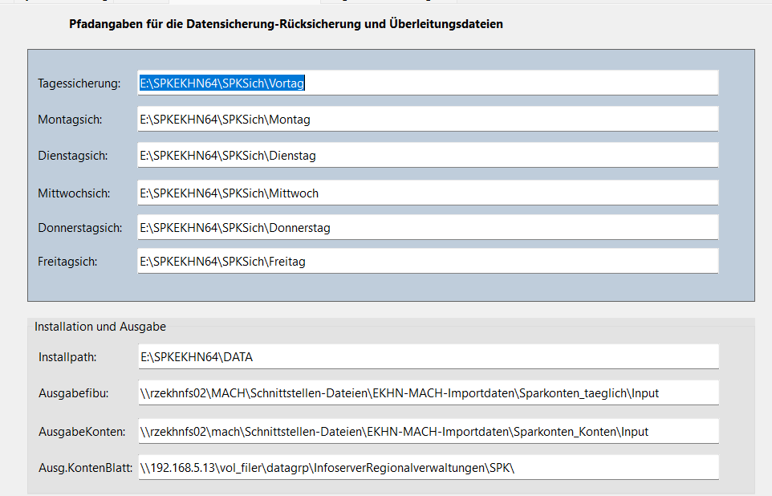
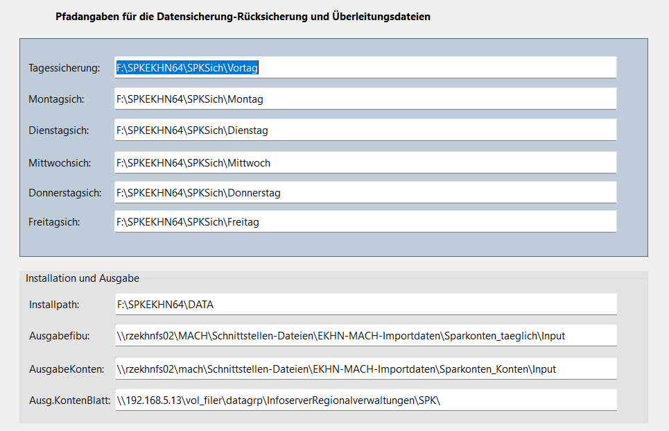

Betreff: Wichtige Systemaktualisierung: Umstellung auf relative Pfade in [SPKEKHN64.Exe] ich habe eine wichtige Verbesserung in SPKEKHN.Exe vorgenommen, die Ihnen zukünftig mehr Flexibilität bei der Installation und Nutzung bietet: Was wurde geändert? Alle festen Laufwerkszuordnungen (z.B. C:\Programme\...) wurden durch relative Pfade ersetzt. Das bedeutet: • Das Programm findet Dateien jetzt automatisch über relative Verzeichnisstrukturen (z.B. .\Daten\...) ausgehend vom Programs Verzeichnis. • Es ist keine feste Laufwerksbuchstaben-Zuordnung mehr erforderlich. • In mehr als 50 Excel, Word, Outlook, usw. Auswertungen wurden die festen Pfadangaben (F:\SPKEKHN64\Vorlagen) usw. ersetzt. • In allen grafischen Auswertungen (Google Charts). In den statischen Charts:
Get psHome of (phoWorkspace(ghoApplication)) to sVorl If (Right(sVorl,1) <> '\') Add '\' to sVorl Add "StatCharts\KreisBalken.html" to sVorl Set psLocationURL of oWebView2Browser1 to sVorl Anstelle:Set psLocationURL of oWebView2Browser1 to "F:\SPKEKHN64\StatCharts\KreisBalken.html" • Vorteile für Euch: ✔ Einfachere Installation auf unterschiedlichen Systemen ✔ Keine manuellen Pfadanpassungen bei Laufwerksänderungen nötig ✔ Bessere Portabilität (z.B. für Wechselmedien oder Netzwerkumgebungen)
Was bedeutet das für Euch? • Bei der nächsten Aktualisierung wird das Programm automatisch die neue Struktur übernehmen. • Die individuellen Skripte mit festen Pfaden, passen Sie bitte an. • Die nachfolgende Datei hat eine Angabe dazu bekommen (Ausg. KontenBlatt). Dieser Pfad war auch im Programm fest vergeben.
Bis auf diese Angaben ist nichts mehr erforderlich. Will heißen: kein Net Use………………. mehr erforderlich.
Installation auf E:

Nachfolgend die Installationen bei mir: auf F: \ wie zurzeit bei Euch

Auf Laufwerk C:\DataFlex Projects\SPKBrowser\SPKEKHN64